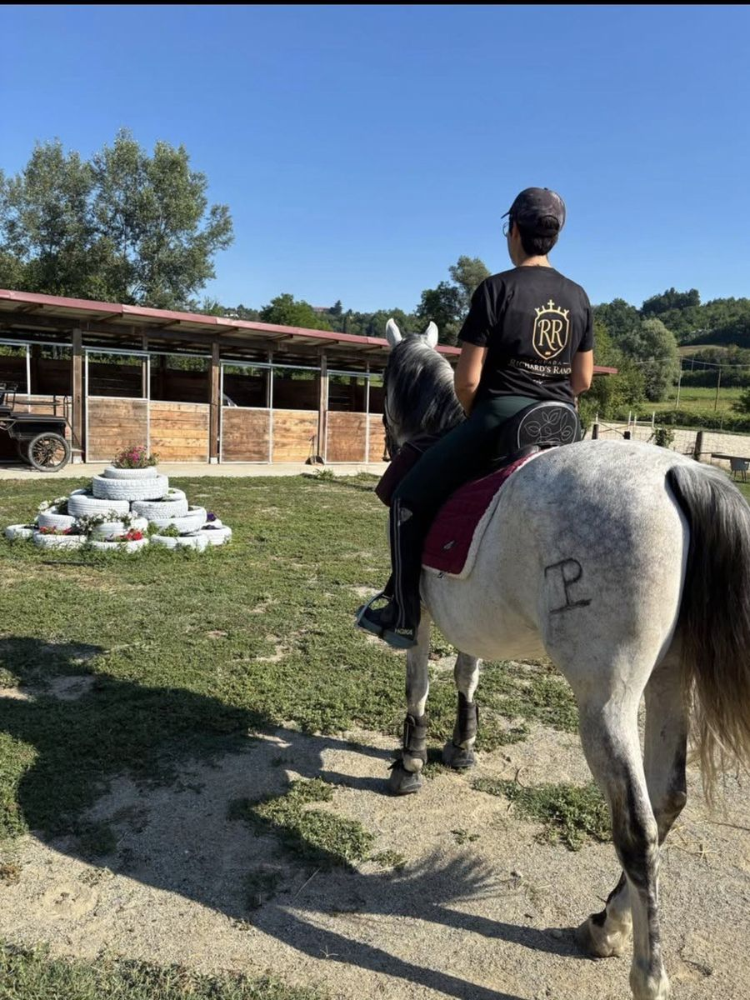
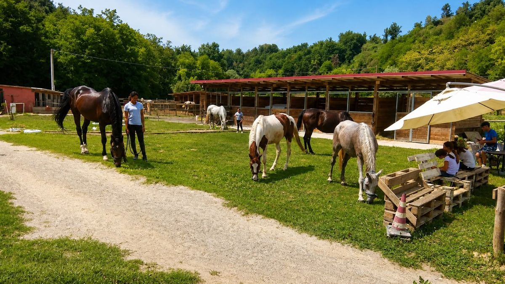
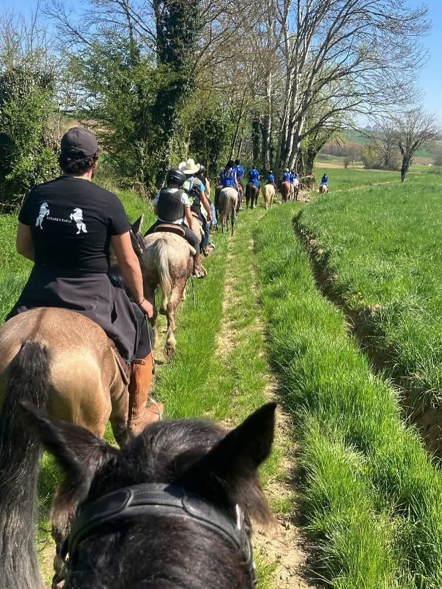
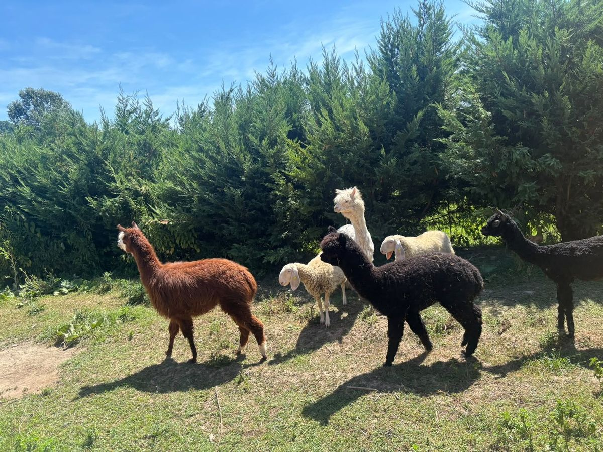
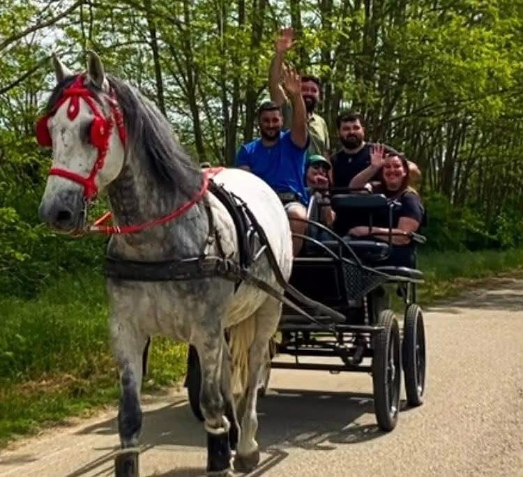
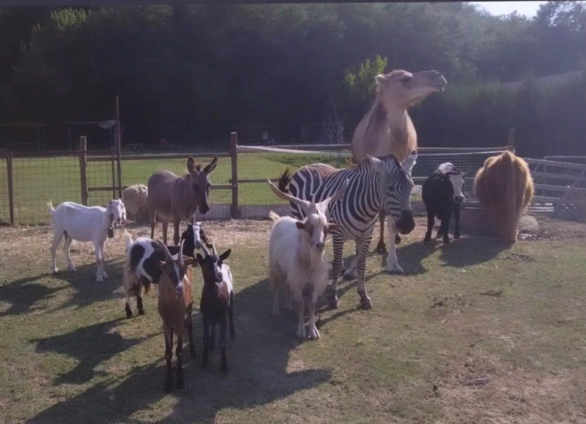
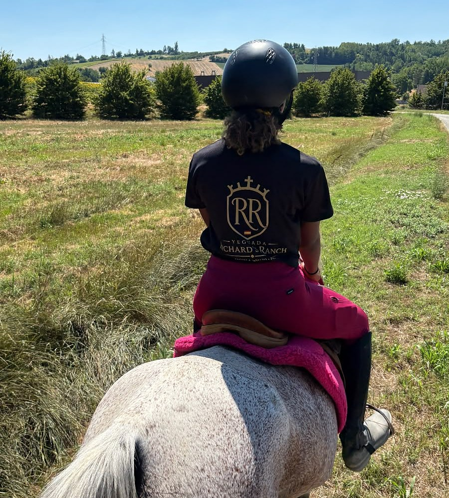
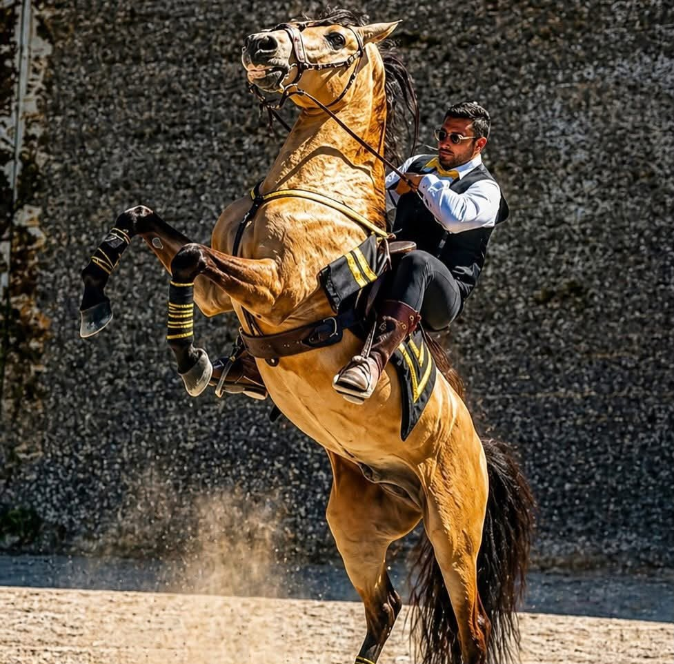
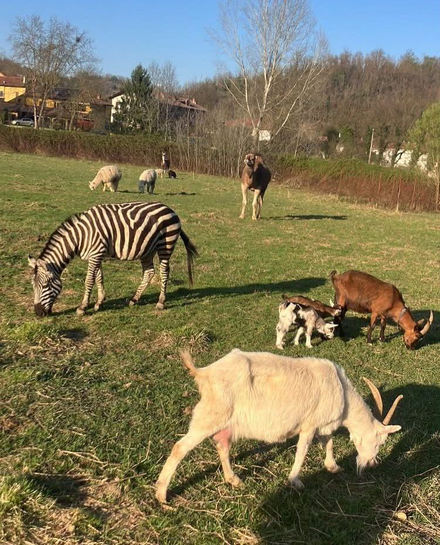
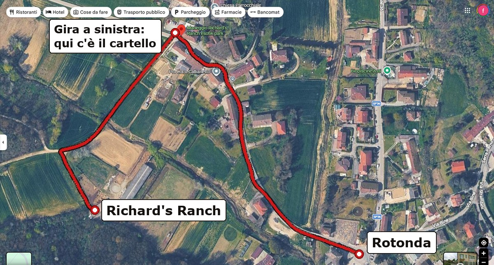

Una passione,
diventata un mestiere.
Gli animali sono sempre stati la mia passione, da quando ero piccolo. Appena finita la scuola l'ho trasformata in un lavoro vero: nel 2019 ho aperto la mia attività. Poi ho fatto il passo più lungo — ho spostato tutto in una struttura molto più grande, immersa nel verde, pensata perché gli animali ci stiano bene: spazio, ombra e tranquillità.
Gli animali vengono
prima del lavoro.
Nelle giornate calde le passeggiate si fanno solo la mattina presto o verso sera, mai nelle ore centrali. Se la giornata non è adatta, l'uscita salta e basta. Gli animali esotici sono tutti in regola con i permessi CITES e le autorizzazioni dell'ASL: qui non c'è niente che non debba esserci.

Prima di essere il nostro lavoro,
sono la nostra passione.
Richard
Sei modi di passare
una giornata al ranch.
Ogni uscita ha i posti contati, quindi si prenota sempre: una chiamata o un messaggio, risponde Richard. E dopo l'attività, per chi vuole, c'è l'aperitivo o la merenda.

Passeggiata a cavallo
Il giro tra le colline, al passo giusto per chi non è mai salito in sella, e i percorsi più lunghi per chi ci sa fare. D'estate si parte la mattina presto o verso il tramonto. I bambini, anche i più piccoli, il loro giro lo fanno sempre: l'unico limite è il peso, fino a 110 kg.

Passeggiata con gli alpaca
Si cammina accanto a loro, non si monta: per questo va bene con i bambini piccoli e con chi davanti a un cavallo ha un po' di soggezione. Con i pony al seguito si sale a sei persone.

Giro in carrozza
Seduti, senza fatica, al passo dei cavalli. Va bene per i nonni, per i bambini piccoli e per le occasioni in cui ci si vuole solo godere il giro.

Il giro in fattoria
Si entra nel parco e si fa il giro insieme a noi, a conoscere la zebra, il dromedario, lo struzzo, i lama e i pappagalli. Alcuni animali si possono accarezzare e imboccare, altri si guardano soltanto — ve lo diciamo noi, uno per uno.

Lezioni e battesimo della sella
Dalla prima volta in sella, che si fa accompagnati e senza fretta, alle lezioni per chi vuole imparare sul serio. C'è il campo coperto: quando piove si lavora lo stesso.

Feste, eventi e spettacoli
Compleanni per bambini e per grandi, addii al nubilato e al celibato, feste private, matrimoni. E gli spettacoli equestri di alta scuola spagnola, che portiamo anche fuori dal ranch.

Jago, Alvin e Stiv
abitano qui.
Una zebra, un dromedario e uno struzzo, in mezzo alle colline dell'Astigiano. Con loro cavalli, pony, asini, alpaca, lama, capre, pavoni e pappagalli: una trentina di specie in tutto, tutte con i permessi CITES e le autorizzazioni ASL in regola.
Non lo diciamo noi.
4,7 stelle su 67 recensioni lasciate su Google da chi è già venuto a trovarci.
Passeggiata incantevole nei boschi con Richard e i suoi cavalli. Abbiamo poi fatto aperitivo sulla panchina gigante, accarezzando la zebra, il dromedario e tutti gli animali del ranch. Esperienza bellissima per grandi e piccini.
Siamo stati a fare il giro della fattoria con un bimbo di 2 anni e mezzo e una bimba di 8. Ci siamo divertiti molto, il personale è stato gentilissimo, la ragazza che ci ha fatto fare il giro ci ha raccontato molto sugli animali… Alla fine era incluso un aperitivo con prosecco e succo per i bimbi.
Bellissimo posto, con tanti animali anche salvati da morte certa. Meravigliosa la passeggiata con gli alpaca, carini e coccolosi… Aperitivo finale nella fattoria esotica con il cammello, la zebra, le caprette e le mucche, sulla panchina gigante: conclusione di una bellissima giornata!
Il ranch, giorno
per giorno.
Foto vere, scattate qui. Toccane una per aprirla e sfogliarle tutte.
Tocca una foto per ingrandirla
A Callianetto,
un quarto d'ora da Asti.

Alla rotonda prendere in direzione Villa San Secondo — Montechiaro. Proseguire circa 400-500 metri sulla strada e, appena finiscono i caseggiati, girare a sinistra nella prima strada che si vede, dove c'è il cartello Richard's Ranch.
- IndirizzoVia Montechiaro 31, 14033 Callianetto — Castell'Alfero (AT)
- Telefono328 244 3138
- EmailRichard.renna2002@gmail.com
- Quandotutti i giorni, solo su prenotazione
- Bambinianche i più piccoli fanno il loro giro
- Peso massimo110 kg in sella
- Se piovesi va nel campo coperto, la lezione si fa lo stesso